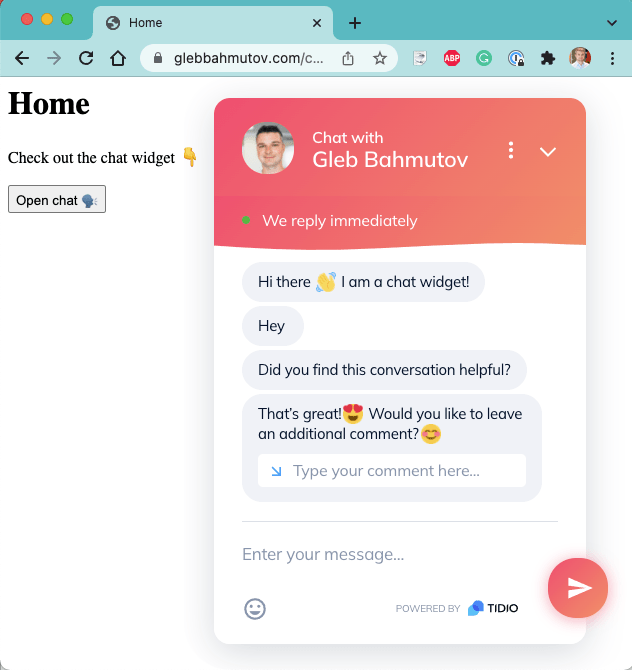
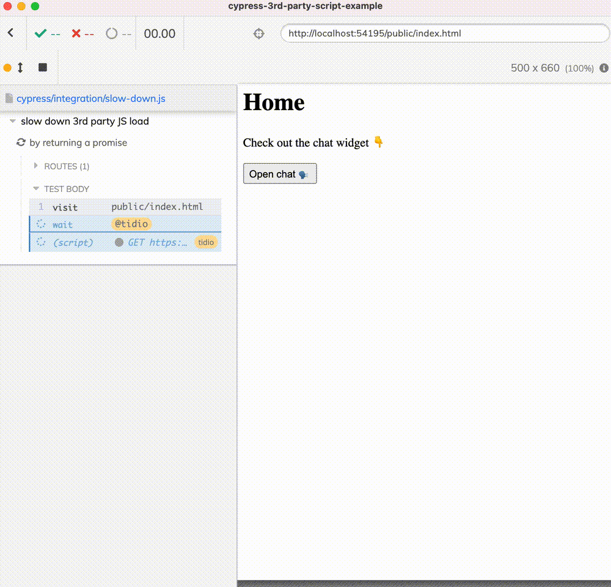
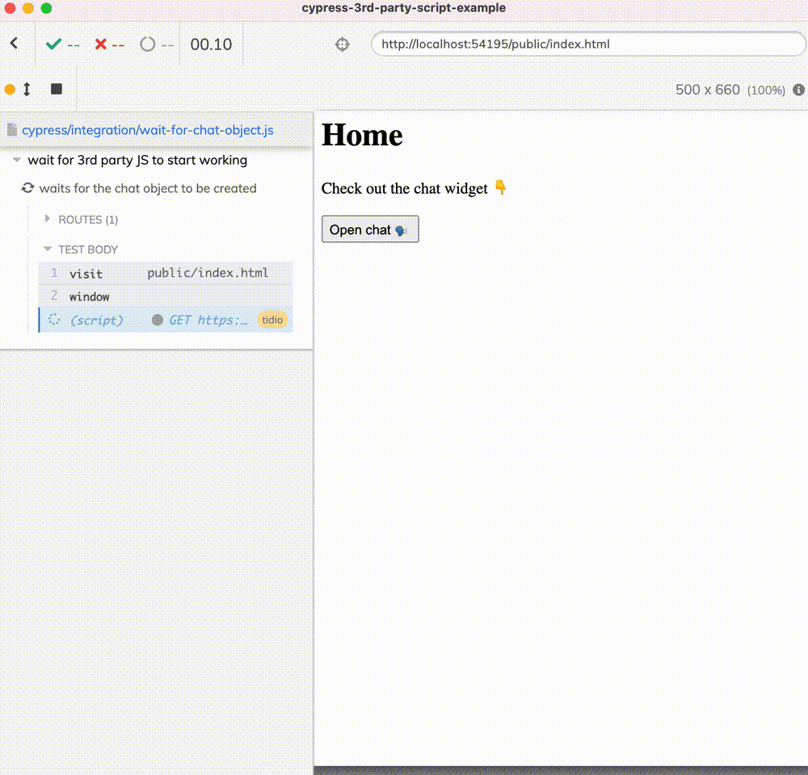
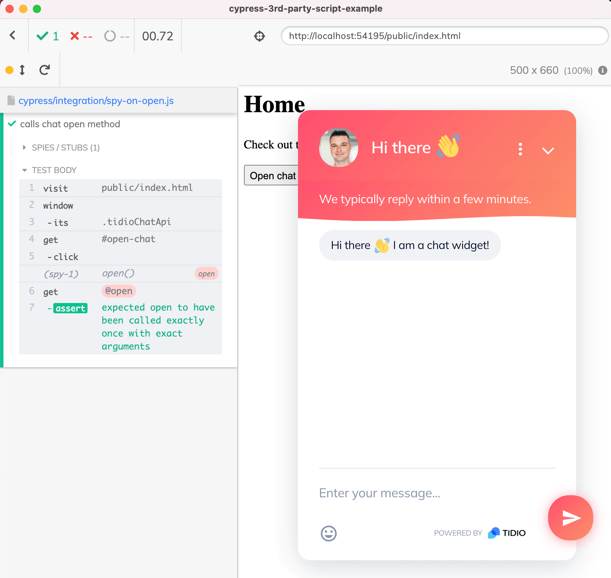
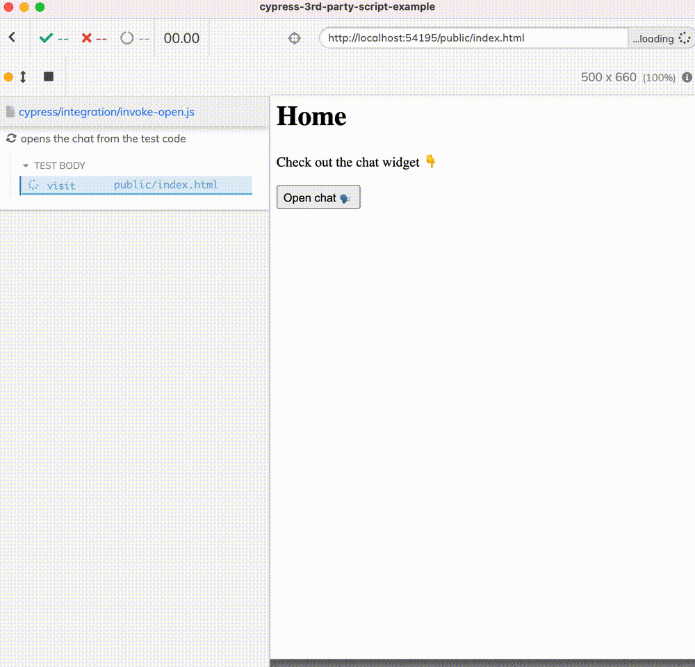
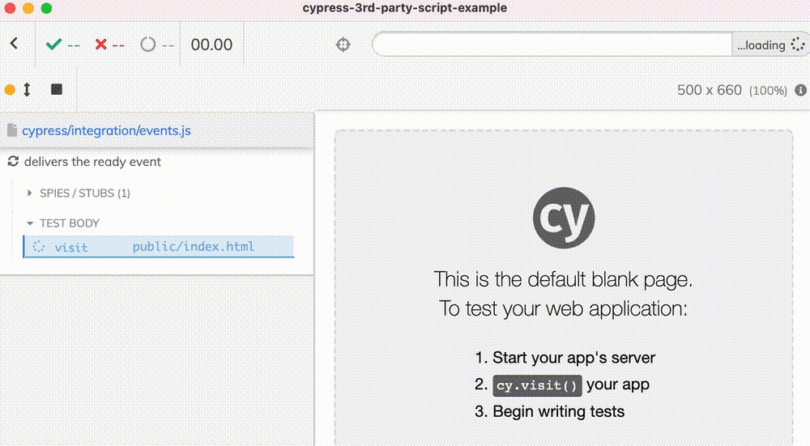

Let's take a look at an application that uses 3rd party script, like a chat widget. Here is my site with the Tidio widget opened:

Our first question might be how to ensure the 3rd party JavaScript has loaded before starting to test the site. In this particular application, the button "Open chat üó£" calls the code tidioChatApi.open() after a click
1 | document.getElementById('open-chat').addEventListener('click', function () { |
If the tidioChatApi library is slow to load or initialize, the click does nothing, leading to the user frustration. Let's see how to slow down the 3rd party JavaScript to test this.
üéÅ You can find the full source code shown in this blog post as well as links to multiple videos explaining the solutions step-by-step in the repo bahmutov/cypress-3rd-party-script-example.
Slow down the JavaScript resource
The application is loading the 3rd party JS library asynchronously
1 | // load 3rd party libraries |
We can intercept the code.tidio.co resource and slow it down using the cy.intercept command
1 | it('by returning a promise', () => { |
The test waits for the network resource to finish before clicking the button.

We can shorten the intercept command by returning a delayed promise without anything. This will make Cypress think you are making a spy, thus the request will continue to the server.
1 | // slows down the network request by 3 seconds |
Works the same was as req.continue() above.
Wait for 3rd party initialization
Even if the JavaScript is returned, does not mean it is ready to work - it might require additional code to be loaded, DOM elements to be created, etc. The application is using window.tidioChatApi object - let's make our test wait for that object to be ready before clicking the button.
1 | it('waits for the chat object to be created', () => { |
The test waits more precisely than the test that simply waited for the network request using cy.wait('@tidio') and you can see it from the recording - it actually opens the browser widget!

Confirm the method was called
Now let's confirm the application calls the method tidioChatApi.open(). We need to create a spy before clicking the button. We get to the method to spy on using the same cy.window().its(...) commands as above.
1 | it('calls chat open method', () => { |
The video shows the application does in fact call the method without any arguments.

Call open from the test
We can even call the open() method ourselves from the test if necessary - what I call app action and which is a unique property of the Cypress tests.
1 | it('opens the chat from the test code', () => { |

Subscribe to events
What if we let the application call the 3rd party chat methods, but subscribe from the test runner to the events it delivers? Sure thing:
1 | it('delivers the ready event', () => { |

Tip: for more cy.spy and cy.stub examples, see my Spies, Stubs, and Clock page.
See also
I have recorded several videos showing how to deal with 3rd party JavaScript code based on this chat application. Take a look at